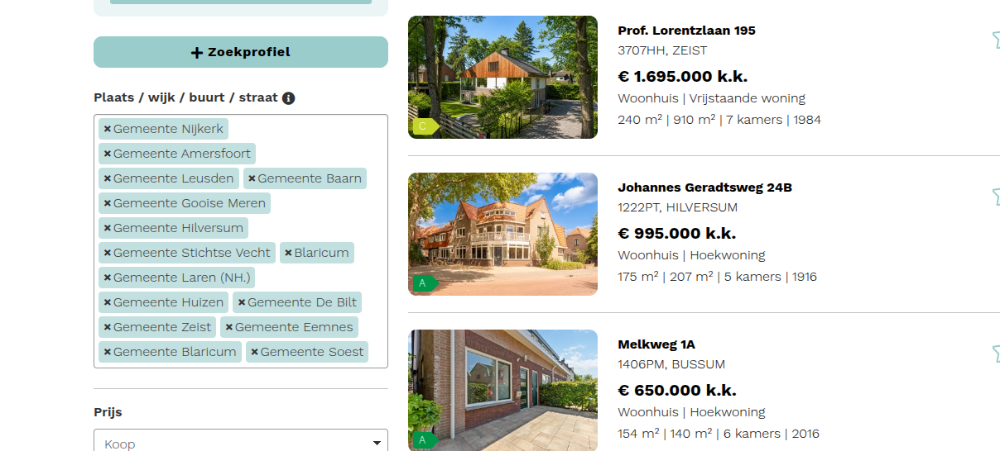
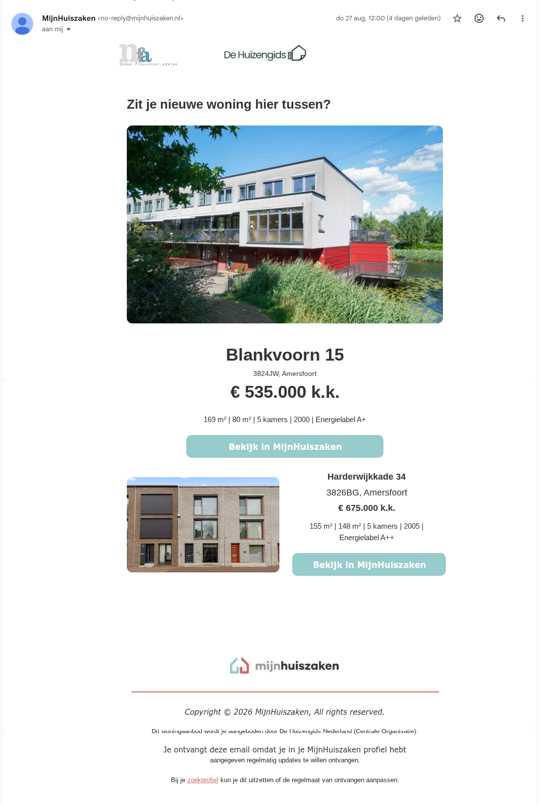
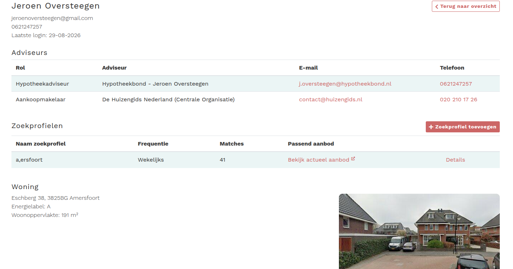

Editie 2026
Houd je klant bij je — van eerste zoektocht tot sleutel.
MijnHuiszaken is de online klantomgeving die woningzoekers, hun hypotheekadviseur en makelaar aan elkaar koppelt. Jouw klant ontvangt namens jou het realtime woningaanbod — en blijft dus bij jou, niet bij een ander.
Grip op de klantreis begint vóór de hypotheekvraag.
Meer dan de helft van je websitebezoekers en gesprekspartners oriënteert zich al op de woningmarkt — maanden voordat er een hypotheekvraag ligt. Die oriëntatiefase gaat nu naar Funda en grote platforms; precies daar raak je klanten kwijt aan banken, online partijen en andere adviseurs. Met MijnHuiszaken haal je die fase naar jouw kantoor.
Wie de zoekomgeving levert, zit vooraan als het concreet wordt. De klant zoekt onder jouw vlag, niet bij een platform dat hem doorverkoopt.
Jouw logo en contactgegevens in de omgeving én in elke e-mailalert. Een zoektraject telt tientallen alerts — tientallen gratis contactmomenten waar een concurrent niet binnenkomt.
De klant ontvangt het realtime woningaanbod namens zijn hypotheekadviseur en zijn makelaar samen. Beide staan met naam en contact in zijn dossier.
Zoekgedrag is je vroegste leadsignaal. Een bestaande klant die opeens groter zoekt? Advieskans op verhuizing en overbrugging — vóórdat hij zelf belt, en vóórdat een ander hem belt.
Bestaande klanten zien de geschatte waarde van hun woning en hoeveel zoekers erop azen. Willen ze verhuizen, dan weet jij dat als eerste.
Wordt het concreet, dan komt contact met één klik tot stand — de hypotheekafspraak staat voordat de klant aan een ander denkt.
Elke klant die via jouw omgeving zoekt, is een klant die niet bij de concurrent, de bank of een online partij uitkomt.
Alles voor de woningzoeker, onder jouw vlag.
Klanten sturen de e-mailalerts bovendien vaak door naar familie, vrienden en bekenden — dan is jouw logo ook weer in beeld.
Dit is iets wat de klant zelf niet kan regelen — jij wel. Dat maakt uitnodigen makkelijk: een button op je site, een link in een e-mail, of gewoon aan tafel samen met jou — want jij weet wat een passende aankoop en financiering is. Zo creëer je eenvoudig nog meer toegevoegde waarde en grip op de klant.


Een beheeromgeving waarmee je direct aan de slag kunt.
Je ontvangt een eigen beheeromgeving waarin je het zoekprofiel voor je klant direct zelf aanmaakt. Geen wachten, geen drempel: de klant zit bij je aan tafel en verlaat het gesprek met een werkend zoekprofiel onder jouw vlag — met jou als hypotheekadviseur en de makelaar in beeld.

Zoekprofielen aanmaken, matches en frequentie per klant volgen, en zien wanneer een klant voor het laatst inlogde.
Weet vóór de markt uit wie er in beweging komt: actieve zoekers, matches en de woning die de klant nu bewoont.
Door de koppeling met eBlinqx wordt het proces voor klant en intermediair beter en efficiënter.
Eénmalige inrichting met je eigen logo en contactgegevens; uitnodigen kan direct daarna.
Als hypotheekadviseur werk je samen met elke makelaar die jij kiest. Daarnaast heeft Blinqx Verzekering & Hypotheek een collectieve afspraak met De Huizengids, waar je als adviseur altijd voor kunt kiezen. Zo combineer je het beste van twee werelden: bij jou in de regio werk je samen met de lokale makelaar, en voor klanten die verder weg zoeken — waar je zelf geen makelaar kent — schakel je De Huizengids in.
Kantoren die het al zo doen.
Advieskantoren en makelaars door heel Nederland bieden hun klanten vandaag het realtime woningaanbod aan via MijnHuiszaken — elk onder hun eigen naam, op hun eigen site.
De klant regelt zijn huiszaken bij jou — en zijn hypotheek dus ook.
Binnen 20 minuten weet je alles.
Boek vrijblijvend een online demo, of vraag direct een account aan via aansluiten.mijnhuiszaken.nl. Inrichten is éénmalig; daarna nodig je klanten uit via je site, een mail of aan tafel.
Hullenbergweg 109, 1101 CL Amsterdam · info@mijnhuiszaken.nl